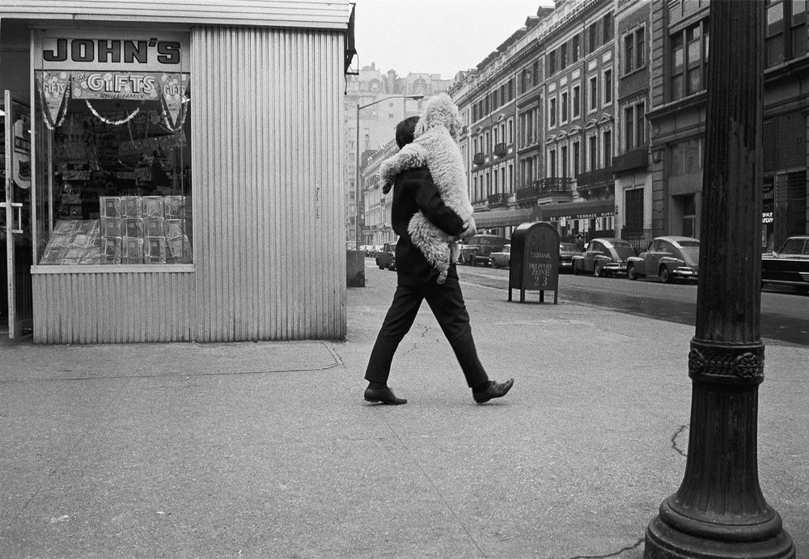
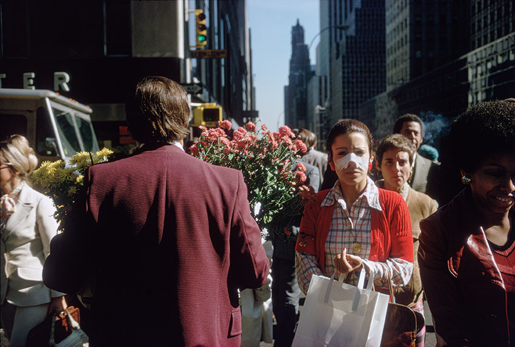
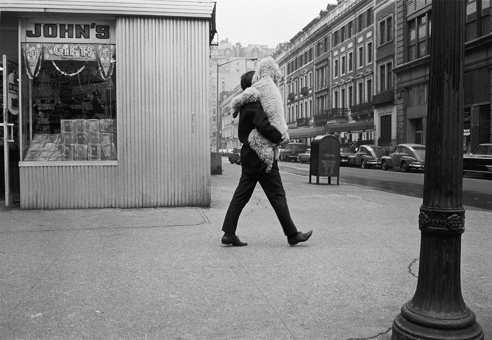
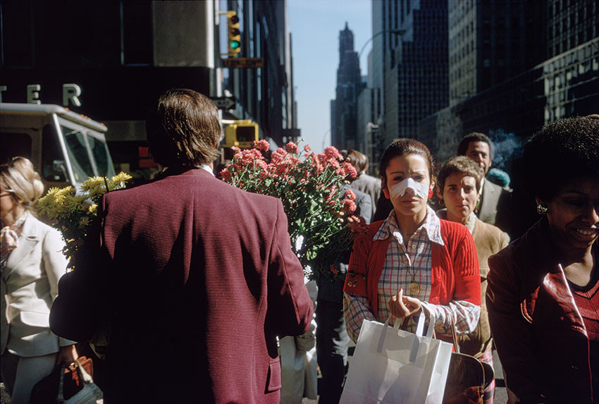

Joel Meyerowitz (born March 6, 1938) is an American street, portrait and landscape photographer.
He began photographing in color in 1962 and was an early advocate of the use of color during a
time when there was significant resistance to the idea of color photography as serious art. In the early
1970s he taught photography at the Cooper Union in New York City.
His work is in the collections of the International Center of Photography, Museum of Modern Art,
and New York Public Library, all in New York, and the Museum of Contemporary Photography in Chicago.